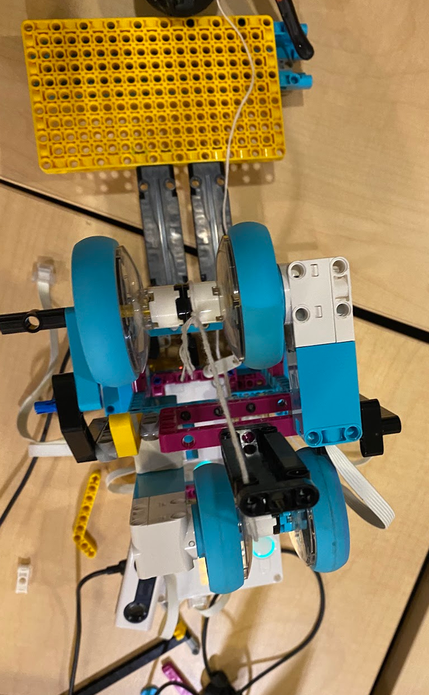
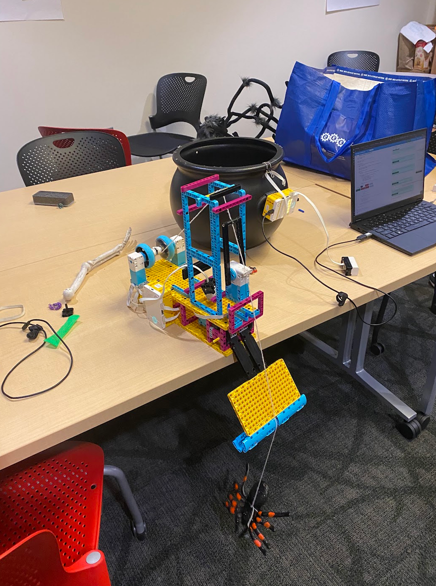
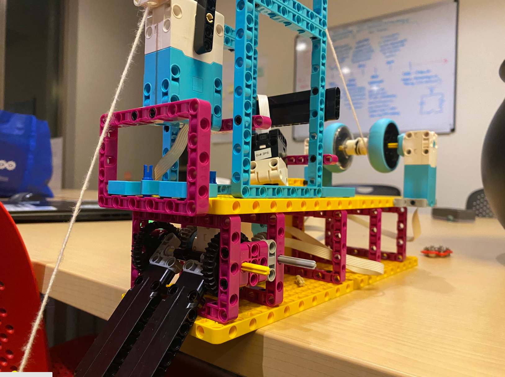
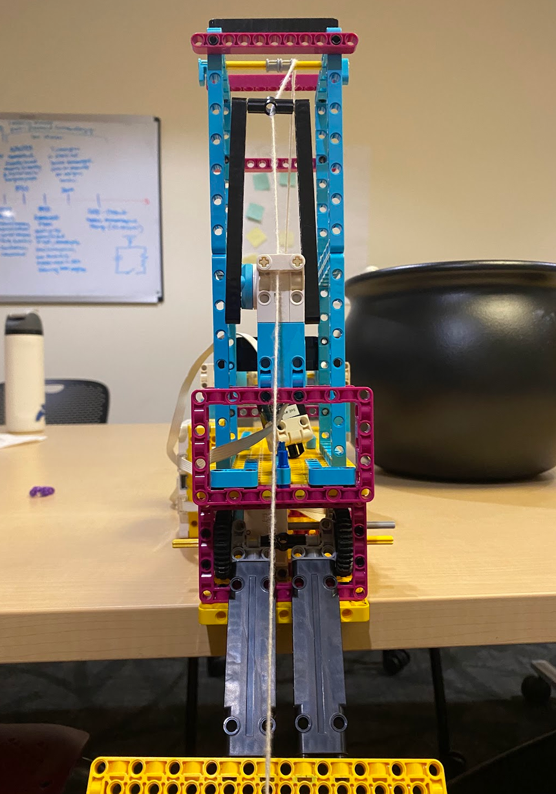

Project Portfolio

Project 10: Haunted House
This group project with J Cruz and Aubrey Sylvia uses two LEGO SPIKE hubs to create an interactive haunted-house feature. When a distance sensor detects someone reaching toward candy in a cauldron, a platform moves and a spider drops from the ceiling. A pulley mechanism raises the spider to reset the effect.
Our first iteration combined ideas without a clear plan and was not structurally sound, so we redesigned it. The second iteration was planned before building and was more organized and structurally sound.





Hub A Code
# Hub A setup:
# Distance Sensor on port C; Hub B listens on Beacon channel "!D".
from spikecomm import Beacon
from hub import port, light_matrix
import distance_sensor
import runloop
# Set the port where the Distance Sensor is connected.
SENSOR_PORT = port.C
async def main():
# Create the Beacon used to send distance readings to Hub B.
beacon = Beacon("!D")
# Keep checking the distance sensor and sending its status.
while True:
millimeters = distance_sensor.distance(SENSOR_PORT)
# Send a distance in centimeters when a valid reading is available.
if millimeters >= 0:
centimeters = round(millimeters / 10)
beacon.broadcast(centimeters)
# Calculate how many rows to light for this distance.
rows_to_light = max(0, 5 - centimeters // 25)
pixels = []
# Build the display from top row to bottom row.
for row in range(5):
if row >= 5 - rows_to_light:
pixels += [100] * 5
elif row == 4:
pixels += [20] * 5
else:
pixels += [0] * 5
# Show the distance bar.
light_matrix.show(pixels)
else:
# Send -1 to tell Hub B that no valid object distance was detected.
beacon.broadcast(-1)
# Clear the display when the sensor has no valid reading.
light_matrix.clear()
# Check again after a short pause.
await runloop.sleep_ms(100)
# Start the SPIKE program.
runloop.run(main())Hub B Code
# Hub B setup:
# String motors: ports A and E
# Platform motor: port B
# Segment motor: port F
# Hub A sends distances in centimeters; -1 means no valid reading.
from spikecomm import Scanner
from hub import port
import runloop
import motor
import motor_pair
# Start a cycle when an object is 20 cm away or closer.
TRIGGER_DISTANCE_CM = 20
# Motor speed is in degrees per second.
SPEED = 600
# Run the string motors for nine seconds.
STRING_RUN_TIME_MS = 7000
# Set the speed and estimated distance for the string motors' return.
STRING_UNWIND_SPEED = SPEED // 2
STRING_UNWIND_DEGREES = SPEED * STRING_RUN_TIME_MS // 1000
# Divide F's 200-degree movement into five equal segments.
F_SEGMENT_DEGREES = 40
F_SEGMENT_COUNT = 5
F_RETURN_DEGREES = 200
# Wait two seconds between F segments, in milliseconds.
F_SEGMENT_PAUSE_MS = 2000
# The platform motor moves 100 degrees each way.
PLATFORM_MOVE_DEGREES = 100
# Store the most recently received distance.
latest_distance = {"cm": None}
# Save a distance value received from Hub A.
def on_distance(values):
if len(values) == 1:
latest_distance["cm"] = values[0]
# Listen for Hub A's distance messages.
scanner = Scanner("!D")
scanner.listen(on_distance)
async def main():
# Remove a leftover pairing from an earlier run, if one exists.
motor_pair.unpair(motor_pair.PAIR_1)
# Pair A and E so they run together as the string motors.
motor_pair.pair(motor_pair.PAIR_1, port.A, port.E)
# Hold the platform at its starting position.
platform_start_position = motor.absolute_position(port.B)
await motor.run_to_absolute_position(
port.B,
platform_start_position,
SPEED,
stop=motor.HOLD
)
# Repeat the cycle when a new close-object detection occurs.
while True:
# Wait for a valid reading of 20 cm or closer.
while True:
distance_cm = latest_distance["cm"]
# Start only when Hub A reports a close object.
if distance_cm is not None and 0 <= distance_cm <= TRIGGER_DISTANCE_CM:
break
# Pause briefly before checking for another reading.
await runloop.sleep_ms(50)
# Drop the platform by 100 degrees and hold it in place.
await motor.run_for_degrees(
port.B,
-PLATFORM_MOVE_DEGREES,
SPEED,
stop=motor.HOLD
)
# Wait five seconds before operating the string motors.
await runloop.sleep_ms(5000)
# Wind the string with A and E for nine seconds.
await motor_pair.move_for_time(
motor_pair.PAIR_1,
STRING_RUN_TIME_MS,
0,
velocity=-SPEED
)
# Raise the platform by 100 degrees and hold it in position.
await motor.run_for_degrees(
port.B,
PLATFORM_MOVE_DEGREES,
SPEED,
stop=motor.HOLD
)
# Start A and E unwinding while F moves through its segments.
motor_pair.move_for_degrees(
motor_pair.PAIR_1,
STRING_UNWIND_DEGREES,
0,
velocity=STRING_UNWIND_SPEED
)
# Move F through five equal 40-degree segments.
for segment_number in range(F_SEGMENT_COUNT):
await motor.run_for_degrees(port.F, -F_SEGMENT_DEGREES, SPEED)
# Pause between segments, but not after the final segment.
if segment_number < F_SEGMENT_COUNT - 1:
await runloop.sleep_ms(F_SEGMENT_PAUSE_MS)
# Return F 200 degrees to its starting position.
await motor.run_for_degrees(port.F, F_RETURN_DEGREES, SPEED)
# Stop A and E as soon as F finishes returning.
motor_pair.stop(motor_pair.PAIR_1)
# Keep the raised platform held in position.
await motor.run_to_absolute_position(
port.B,
motor.absolute_position(port.B),
SPEED,
stop=motor.HOLD
)
# Wait until the object is farther than 20 cm away or nothing is detected.
while True:
distance_cm = latest_distance["cm"]
# Either condition clears the previous close-object detection.
if distance_cm == -1 or (
distance_cm is not None
and distance_cm > TRIGGER_DISTANCE_CM
):
break
# Pause briefly before checking for another reading.
await runloop.sleep_ms(50)
# Start the SPIKE program.
runloop.run(main())